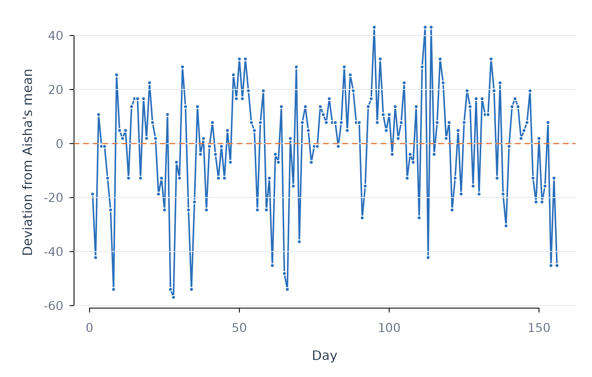

Panel Preparation with preprocess_panel()
Source:vignettes/preprocess-panel.Rmd
preprocess-panel.RmdAnalytic question
preprocess_panel() prepares repeated measurements
without crossing person boundaries. The function takes a long-format
panel, person and time columns, and variables to transform. It returns
the original data frame with requested centred, scaled, detrended,
decomposed, or lagged columns.
preprocess_panel() treats centring and decomposition as
different analytic operations. Person centring replaces a variable with
deviations from each person’s mean. Decomposition retains both the
deviation and the person mean. The latter supports separate
within-person and between-person coefficients in one pooled model (Mundlak
1978).
Create decomposition and lag columns
preprocess_panel() orders rows by learner and day before
constructing lags. The call below adds within-person and between-person
components plus a one-occasion lag for efficacy and monitoring. Table 1
displays the returned columns directly.
prepared <- preprocess_panel(analysis_data, id = "name", time = "day", vars = c("efficacy", "monitoring"), decompose = TRUE, lag = 1)
head(prepared)
#> name day efficacy value planning monitoring effort control help social
#> 1 Aisha 1 38.23529 58.33333 0.00000 34.210526 53.96825 39.39394 78 60.0
#> 2 Aisha 2 14.70588 47.22222 50.00000 7.894737 79.36508 45.45455 16 10.0
#> 3 Aisha 3 67.64706 52.77778 52.27273 19.736842 77.77778 39.39394 28 55.0
#> 4 Aisha 4 55.88235 63.88889 65.90909 22.368421 93.65079 42.42424 24 47.5
#> 5 Aisha 5 55.88235 36.11111 52.27273 22.368421 71.42857 57.57576 48 57.5
#> 6 Aisha 6 44.11765 61.11111 52.27273 57.894737 82.53968 42.42424 28 62.5
#> organizing efficacy_within monitoring_within efficacy_between
#> 1 1.612903 -18.684012 8.923752 56.91931
#> 2 61.290323 -42.213424 -17.392038 56.91931
#> 3 77.419355 10.727753 -5.549933 56.91931
#> 4 37.096774 -1.036953 -2.918354 56.91931
#> 5 75.806452 -1.036953 -2.918354 56.91931
#> 6 30.645161 -12.801659 32.607962 56.91931
#> monitoring_between efficacy_lag1 monitoring_lag1
#> 1 25.28677 NA NA
#> 2 25.28677 38.23529 34.210526
#> 3 25.28677 14.70588 7.894737
#> 4 25.28677 67.64706 19.736842
#> 5 25.28677 55.88235 22.368421
#> 6 25.28677 55.88235 22.368421preprocess_panel() sets the first lag of each learner to
missing in Table 1. The second row for Aisha receives the first row’s
efficacy and monitoring values. The within-person efficacy column
expresses each daily value as a deviation from Aisha’s mean. The
between-person column repeats that mean across Aisha’s rows.
Plot the transformed series
The time-series display uses the centred values returned by
preprocess_panel(). A zero reference identifies Aisha’s own
mean, so the sign of each point has a direct within-person
interpretation.
aisha <- subset(prepared, name == "Aisha")
figure_begin()
plot(aisha$day, aisha$efficacy_within, type = "l", lwd = 1.8,
col = fig_col["blue"], xlab = "Day",
ylab = "Deviation from Aisha's mean")
figure_grid(x = FALSE, y = TRUE)
abline(h = 0, col = fig_col["orange"], lwd = 1.4, lty = 2)
points(aisha$day, aisha$efficacy_within, pch = 21,
bg = fig_col["blue"], col = "white", cex = 0.62)
Figure 1. Person-centred efficacy over time for Aisha.
Figure 1 fluctuates around zero because the series is person-centred. Positive values mark days above Aisha’s typical efficacy. Negative values mark days below her typical efficacy. The transformation changes the interpretation of a regression coefficient from a raw-score contrast to a within-person contrast.
Assumptions and failure checks
preprocess_panel() requires a meaningful ordering
variable for lagging and detrending. A lag represents the preceding
recorded occasion. The lag_max_gap argument can invalidate
lags that span an unacceptable elapsed time. No lag is carried from the
final row of one learner to the first row of another learner.
preprocess_panel() applies scaling parameters within the
requested scope. Person scaling changes coefficients into
person-specific standard-deviation units. Grand scaling uses a common
scale. Detrending removes an estimated linear trend and requires a time
column. Transformation choices should follow the estimand rather than a
desire to improve model fit.
When to use which
preprocess_panel() is appropriate for explicit centring,
scaling, decomposition, detrending, and lag construction.
preprocess() is the network-readiness audit for
stationarity, compliance, and series variance.
fit_within_between() performs decomposition inside the
model and is preferred when the main question directly contrasts
within-person and between-person effects.